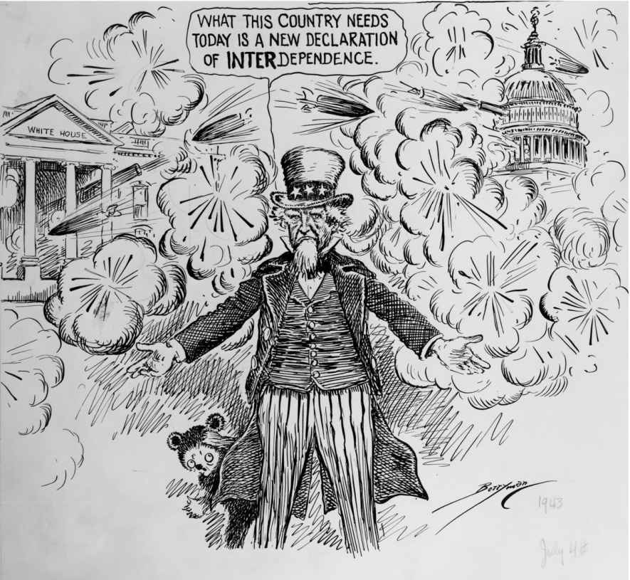
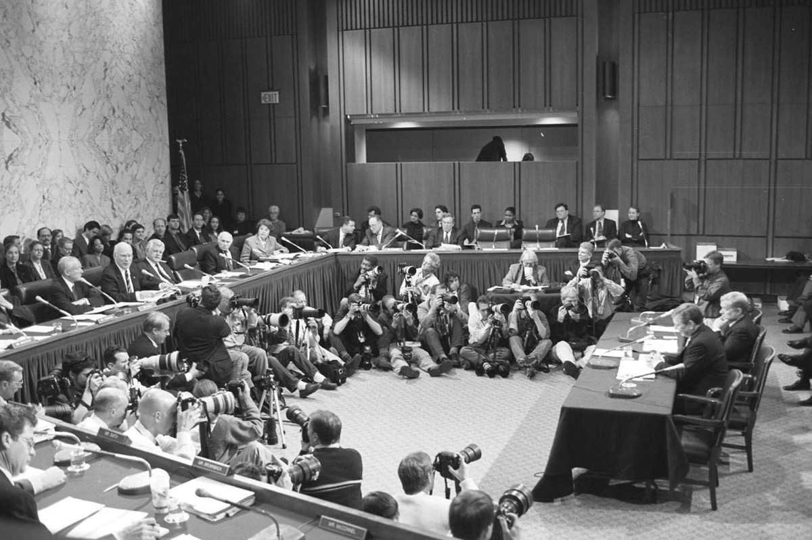

约翰·F.肯尼迪总统曾若有所思地说道：“当我还是一名国会议员时，我未曾意识到国会有多重要，但如今我了解了。”尽管肯尼迪曾在国会两院供职16年，但直到进入白宫之后，他才体会到立法分支的集体影响力，这种影响力曾阻碍他给出的众多提案。
国会可以拖延总统的立法议程，也可以在其背后团结起来予以支持，这在新任总统于国家危难之际就职时尤其明显。1861年，亚伯拉罕·林肯和国会中作为多数党的共和党面临内战考验，但国会中南方议员脱离联邦反而有助于共和党人就前几任总统予以否决的关税、土地分配、教育及其他国内改革问题制定法律。1933年，已实现大规模扩张的参、众两院民主党作为多数党，准备颁布富兰克林·D.罗斯福送交的任何可以使国家走出危机的法案，进而在其执政“前一百天”中快马加鞭地展开立法工作。肯尼迪总统曾屡遭立法挫折，但他于1963年遇刺导致举国悲恸，从而使足智多谋的继任人林登·B.约翰逊得以通过颁行其“伟大社会”计划取得引人注目的立法成就。
立法成果是衡量总统成就的重要标准，这一事实鼓舞现代总统承担起“主要立法者”和最高行政长官的角色。总统呼吁国会做正确的事，并会运用公众和幕后压力，但终究须等待国会采取行动。他们谈判达成的条约必须等待参议院三分之二议员赞成才得生效。他们的任命人选只有得到参议院的同意才能上任。他们提交的作为联邦开支水平建议的财政预算，或许会被视为“半路夭折”而被国会驳回。总统可以否决议案，结果却是国会推翻了这些否决。西奥多·罗斯福曾评论道：“我认为国会至少应该做到三分之一到二分之一，而我万分庆幸我得到了这么多。”
携以往国会经历就职的总统在应对立法分支方面具有优势。伍德罗·威尔逊虽然拥有治国智慧，却没能获得参议院对《凡尔赛和约》的赞成，在此之后，甚至不尽如人意的沃伦·G.哈定都试图与国会领袖合作制定对外政策。相反，赫伯特·胡佛在商界的管理经验和在政府的行政生涯都非常成功，却将国会视为必须尽可能予以回避的麻烦，这一思想倾向致使他成为失败的总统。胡佛身边的一位政治情报人员评论道：“他从未真正将参、众两院视为我们政府的理想组成部分。也许它们不是，但这改变不了它们既已存在并具有同等权力的事实。”
强而有力的总统们既已同选民建立起纽带，并作为军队最高统帅运用着巨大的权力，公众便将总统视为联邦政府的第一分支。然而，宪法第一条详细阐明了国会的广泛权力，随后才以篇幅较短的第二和第三条对行政和司法部门加以概括。所有这些都使国会议员对国会作为政府独立分支的地位颇为敏感。有记者曾问山姆·雷伯恩议长：“您曾为八位总统效力，不是吗？”雷伯恩恼火地回应道：“我没有为任何总统效力。我曾与八位总统共事。”
国会年度会期通常始于1月，会议伊始发表国情咨文彰显了总统作为主要立法者的角色。副总统会在指定的夜晚带领一队参议员穿过国会大厦前往更加宽敞的众议院议事大厅。众议员们竞相占据中央通道两侧令人垂涎的座位，在这里对总统迎来送往可以通过电视播放出去。内阁部长和最高法院大法官在头排拥有预留座席。记者、外交官、家庭成员、工作人员、竞选捐助人及其他宾客会坐满旁听席。这些盛况均非宪法所定，宪法只规定总统“不时”就国情向国会做出汇报，并“将其认为必要且适当的议案提请国会审议”（宪法第二条第三款）。
最初两任总统乔治·华盛顿和约翰·亚当斯都亲自发表年度咨文，但托马斯·杰斐逊认为此举如同君主向议会发表讲话。杰斐逊转而将咨文交予国会，由参、众两院书记员予以宣读，后来者依循他的做法，直到伍德罗·威尔逊打破了这种传统。威尔逊作为政治学家曾对国会有所研究，他抓住亲自出席两院联席会议的难得机会巩固行政首脑的立法领导地位。随着时间的推移，媒体的诸多发展进步使观众群大为扩展。1923年，卡尔文·柯立芝首次通过广播播放国情咨文讲话。1936年，富兰克林·D.罗斯福说服国会将讲话从午后改到晚上黄金时间。哈里·杜鲁门于1947年首次通过电视播放国情咨文演讲，至1990年代，比尔·克林顿的讲话通过互联网进行广泛传播。
参、众两院为听取国情咨文，连同为统计选票以宣布总统大选获胜者而举行两院联席会议（joint session），以此履行宪法赋予的职能。两院集合起来听取外国元首或其他贵宾演讲时并不是在处理立法事务，因此称其为联合会议（joint meetings）。1824年，拉法耶特侯爵成为第一位受邀于国会发表讲话的外宾，他和乔治·华盛顿两人的肖像分别悬挂在众议院议会大厅发言台两侧。继其之后，（受邀者）还包括英国首相温斯顿·丘吉尔、女王伊丽莎白二世、以色列总理梅纳赫姆·贝京、俄罗斯总统鲍里斯·叶利钦以及南非总统纳尔逊·曼德拉。

图9 长期供职于《华盛顿明星报》的社论漫画家克利福德· 贝里曼在1943年7月4日刊登的这幅漫画中刻画了国会和总统的积怨，并附上说明文字：“这个国家如今需要的是一篇新的《互助宣言》”
除杰克逊和林肯等少数例外，19世纪的总统们都将其角色界定为国会通过的各项法律的管理者，但通常在幕后或借助其国会代理人实现立法领导。而伍德罗·威尔逊开创了使行政首脑作为主要立法者的先例。威尔逊崇尚英国议会制并试图发挥首相之于国会的相似作用。他与作为多数党的民主党密切合作，而民主党当时利用罕见的党团捆绑规则（binding-caucus）维护党纪并颁布威尔逊的改革法案（在施行捆绑的党团中，政党成员同意投票赞成党团决定的一切事务，这一政策自此之后未再重演）。威尔逊说服参议院中的民主党人选择一位议场领袖安排其各项计划，他们据此选出首位参议院多数党领袖约翰·沃斯·克恩（印第安纳州民主党人）。1917年，威尔逊又说服参议院第一次采用终止辩论规则。但在取得这些成功之后，他的总统生涯以惨败告终。国会并非议会，而威尔逊在其所属政党于1918年丧失国会多数席位后依然担任总统。在执政的最后两年中，他已经无法说服参议院批准由他亲自参与谈判的《凡尔赛和约》和国际联盟。
令总统们感到失望的是，心存怀疑的选民会将国会的掌控权交给反对党，这增加了另一重制约与平衡。政府在分治时期促成过一些著名的立法，但也可能导致立法僵局，国会会漠视总统的提案并通过其他替代议案，但很容易遭到否决。约翰·泰勒（1841—1845年在任）、安德鲁·约翰逊（1865—1869年在任）以及理查德·尼克松（1969—1974年在任）几位总统在任期与国会的冲突引人注目。转投辉格党的原民主党人泰勒是首位因在任总统离世而继任的总统。他随后与辉格党分道扬镳，并否决了该党的关键立法。国会中的辉格党人则以驳回泰勒的多数立法提案和提名予以回击。于1864年与共和党人亚伯拉罕·林肯搭档竞选的前民主党人安德鲁·约翰逊，在林肯遇刺后继任总统。约翰逊在内战后重建南方，他所采取的政策在他看来是林肯会推行的宽大政策。这使得约翰逊同共和党人对立起来，这些共和党人不仅主导国会，也因南方人拒绝给予刚刚从奴隶制中解放出来的人们公民基本权利而被激怒。不同分支之间围绕史无前例的重建问题在宪法层面发生的冲突，在约翰逊遭众议院弹劾却被参议院宣告无罪时达到巅峰。
一个世纪之后，共和党人理查德·尼克松在国会中面对的是规模庞大的作为多数党的民主党。尼克松试图绕开国会，对用于在他看来耗资过高的联邦项目的拨款予以扣押或拒不支出，并否认需要国会支持其在越南投入一场不得人心的战争。然而，尼克松对水门事件的掩盖遭到曝光，使国会得以推翻他对1974年《国会预算与扣压拨款控制法》（Congressional Budget and Impoundment Act [14] ）以及《战争权力决议》的否决，从而在两个分支间恢复了平衡。尼克松则以辞职避免了弹劾。其他时期，分治的政府也催生了跨党派的妥协让步。罗纳德·里根担任总统期间（1981—1989），众议院由民主党人掌控，而共和党人主导参议院六年，里根的多数计划都得以制定为法律，靠的是使两院相互竞争。
至21世纪，国会在政治上越加两极化。如今，总统们面对根据党派阵线投票表决的趋势，集中力量在国会中维护其所属政党的支持。乔治·W.布什执政时期，议长丹尼斯·哈斯特（伊利诺伊州共和党人）为了避免使少数党实现权力平衡，决定不在众议院推进法案，除非得到“多数党中多数议员”的支持，即除非绝大多数众议院共和党人对法案予以支持。巴拉克·奥巴马总统执政伊始亲自走访众议院共和党大会，为其经济刺激法案寻求两党支持。在共和党人整体反对经济刺激的情况下，总统转变策略，在国会民主党中的自由主义者和保守的“蓝狗”派之间展开协商，以此维护多数党的凝聚力并在没有少数党支持的情况下制定法律。
一旦进入椭圆形办公室，总统就要做出数千项任命，从内阁成员、机构领导到外交官和联邦法官不一而足。多数任命都需要参议院予以承认，这导致行政和立法部门之间摩擦不断。引发美国革命的因素之一是皇家总督滥用任免权，这促使多数第一批颁布的州宪法将任免权赋予州立法机构。而纽约州和马萨诸塞州允许州长在立法者们表达“意见和同意”后做出任命。宪法起草者们在最初考虑由参议院提名后，采纳了“意见和同意”的方式（宪法第二条第二款）。由于参议员代表整个州，他们对于判断被提名人资格，特别是联邦法院提名，比众议员更加胜任，基于这样的考虑，这项权力才被交给参议员。
同意权包括否决的可能性。1789年，参议院拒绝乔治·华盛顿将本杰明·菲什博恩任命为萨凡纳港收税员，华盛顿于是成为第一位感受到这种锋芒的总统。菲什博恩胜任有余，却没有得到佐治亚州两位参议员的支持。这一事件开创了“参议院礼遇惯例”，即某些参议员反对其所属州被提名人的意愿会得到其他参议员的尊重。
为避免遭遇令人尴尬的拒绝，总统们遂开始在呈交提名以争取承认之前，向参议员们征求意见，这有时意味着考虑更有可能获得承认而并非作为首选的候选人。詹姆斯·麦迪逊担任宪法起草者期间曾认为提名乃是一项行政职能，但他在当选总统后放弃了个人偏好的国务卿人选，代之以参议院垂青的候选人。约翰·泰勒及安德鲁·约翰逊等几位同参议院针锋相对的总统，则因若干内阁和司法提名遭到反对而颜面受损。泰勒曾三次呈交财政部长提名，每一次参议院都以更大的投票差额予以否决。
意见和同意权实际上使参议员们有权决定来自各州的人选当中谁将获得任命。乔治·斯马瑟斯（佛罗里达州民主党人）回忆道，他在参议院供职时最怡然自得的就是“任命法官。任命联邦法警。你对任何需要得到承认的任命都绝对拥有更大的影响力。不对，担任参议员乃是吸引力、影响力、权力都远远胜过众议员的工作”。美国律师协会曾以不够资格为由驳回参议员罗伯特·S.科尔（俄克拉荷马州民主党人）向肯尼迪总统推荐的法官提名人选，司法部官员们感到科尔对这一裁定不无欢喜，原因在于一旦总统置律师协会于不顾并坚持呈交提名，便显示出参议员科尔在立法方面的影响力。

图10 2001年，围绕提名前参议员约翰·阿什克罗夫特（密苏里州共和党人）任司法部长而召开的参议院司法委员会听证会上，媒体记者们在参议员和证人之间席地而坐，彰显了公众对该事件的关注
作为参议院礼遇惯例的体现，参议院司法委员会在1913年开始对所有司法分支的提名采用“蓝条子”。在此之后，每一项提名的文件卷宗封面都会附上一张蓝色纸条。如果蓝条子上缺少（被提名人）所在州任何一位参议员的签名，该项提名便很可能再也不会走出委员会。蓝条子成为白宫与参议院的协商促进机制。面对这一事实，总统经常从参议员提交的候选人名单中挑选提名人选。然而，随着意识形态斗争席卷法院提名事务，蓝条子也失去了约束力，近年来，阻止一项提名需要一个州的两名参议员联名反对。
为了填补参议院休会期间出现的空缺职位，总统可以任命某人出任该职，直至国会下一会期结束为止；如果他们希望在那之后继续任职，就需要得到参议院的批准。休会任命使总统得以保证政府在国会会期之间的几个月中持续运转。但当国会开始全年开会，休会任命也就失去了最初的意义。总统开始将其作为安置一些被提名人的策略，他们或者遭到委员会的阻拦，或者存在遭到否决的危险。乔治·W.布什总统于2005年利用休会任命使约翰·W.博尔顿出任美国驻联合国大使，而一些参议员曾予以反对，认为他不具备外交能力，无法胜任该职。博尔顿随后一直担任该职直至2006年12月休会任命期满辞职，而参议院当时显然不会再批准其任职。当参议院进入短暂的假期休会时，总统会宣布一批休会任命。罗纳德·里根总统曾设法在周末做出休会任命，但最高法院制止了这一做法。当总统和参议院多数党来自互相对立的两党，双方通常经过磋商达成协议，总统同意不再做出休会任命，以此确保更具争议的任命可以进行投票表决。乔治·W.布什总统曾拒绝达成这样的协议，而参议院诉诸召开形式会议（pro forma sessions），在此期间，每隔几日就会有一位参议员敲击木槌宣布参议院开会并于几秒钟后关门，以此避免正式休会。
艾伦·德鲁里的畅销小说以及电影《华府千秋》（Advise and Consent ）的主线就是否决具有争议的国务卿人选。参议院事实上批准了全部内阁提名中的95%，却否决了最高法院所有被提名人选的三分之一。参议员们的理由是，总统应该辅以认同他们并可以信任的顾问，况且行政分支的任命也不会超过总统任期。相反，司法系统乃独立分支，其成员在品行良好的情况下会终身任职。
司法提名已发展到极具争议的地步。19世纪时，最高法院的提名直接进入参议院议场而不是委员会。参议员们关起门来讨论提名，为的是保护被提名人的隐私并直言不讳（尽管他们的讨论和表决总是会透露给媒体）。至20世纪，则由司法委员会举行听证会，同时要求被提名人代表个人利益作证并回答参议员的提问。如今，政府的“指挥者”会陪同被提名人并建议他们向参议员表达应有的尊重而不是与之辩论。法官提名人面对问题须尽力表现得开放坦率，与此同时也不能透露他们对重要事务会如何裁决。
联邦法院提名一经任命便终身任职，因此长期以来都会激起政治热情。早在1795年，参议院就曾否决过一项最高法院提名。保守派曾在1916年强烈反对提名路易斯·布兰代斯，并于1939年强烈反对提名费利克斯·法兰克福特；但他们都在担任法官期间卓有成就。1968年，保守派通过阻挠议事反对林登·约翰逊提名自由主义者阿贝·福塔斯出任首席大法官，而1969年和1970年，自由主义者分别以克莱门特·海恩斯沃斯存在财务问题而G.哈罗德·卡斯韦尔存在资格问题为由，反对理查德·尼克松任命这两位保守主义者进入最高法院。
1987年，里根总统提名前司法部副部长罗伯特·博克进入最高法院，在参议院引起激烈交锋。博克的专业能力无人质疑，招致反对的是他强硬的个人观点和意识形态倾向。博克在听证会上与参议员们唇枪舌剑，在很大程度上使自己失去了这份工作。他的反对者发起全国性宣传活动反对其提名，并游说参议员予以投票否决。自从博克失败之后，凡遭遇这类组织化运动的被提名人就会称为“被博克”（borked） [15] 。
白宫的国会联络人汤姆·科罗洛格斯曾协助包括博克法官在内的数百位被提名人设法通过任命听证会，他建议他们接受一个事实，那就是听证会不会公平：“你没有权利，也没有规定允许你‘做出抗辩’。道听途说的提问是得到准许的。任何一位美国参议员都可以就他/她选择的任何问题发问。所以要恭敬有礼……目的是证明你具有资格并毫发无伤地走出来。”
联邦法官提名遵循着一套复杂的程序。由总统宣布提名，联邦调查局对被提名人进行背景调查，美国律师协会对被提名人进行司法资格评估。被提名人必须完成司法部和参议院司法委员会冗长的调查表。提名从宣布直至抵达委员会或许会用去数月时间。被提名人将被邀请在听证会上作证，继而会被给予一段时间对可能提出的所有问题做出回答。委员会随后将投票表决呈报给整个参议院，参议院将否决或批准提名。如果存在重大反对意见，委员会将扣住提名不予呈报，总统在这种情况下会撤回提名而不是直面失败。委员会可以驳回提名，也可以将反对票呈报给议场。在议场上，参议员可以推迟任命或通过阻挠议事加以反对。乔治·W.布什的多项司法提名都曾遇到此类拖延策略，于是他要求对其提名进行“直接”表决，宣称要求超过多数才能投票予以批准不符合宪法规定。然而，宪法允许参议院自定规则（宪法第一条第五款）。
前副国务卿尼古拉斯·卡岑巴赫曾总结道：“在对外政策问题上，国会总体而言对总统帮助不大”，原因在于这项事务缺乏“政治利润”。然而应对越南战争的亲身经历使卡岑巴赫了解到，单凭总统个人“而没有国会强大的后盾，一刻都无法保持他所需要的全民支持”。因此，对外政策方面的分权不仅仅是宪法问题，更是“实际政治问题”。总统的拥护者们辩解道，国务卿或军队最高统帅不可能有535名。通常情况下，总统是战争与和平事务的主导者，他将国会介入对外政策视为一种干扰，即便宪法规定国会有权调控对外贸易、确认外交职务任命、批准条约并宣布战争。与行政机构不同，立法部门并不会统一口径。人民的代表体现着公众的意见，他们对美国参与国际事务时常意见不一。
宪法规定，总统“根据并凭借参议院的意见和同意，经三分之二在场参议员批准，有权缔结条约”（宪法第二条第二款）。“同意”一词含义明确，但“意见”一词含混不清。国会议员抱怨道，总统几乎不会在达成重塑国家政策的条约之前向他们征询意见，而总是宁愿在即将公开宣布前才通知他们。他们表示更希望在飞机起飞而不是坠落时在场。
第一届国会期间，参议员们希望华盛顿总统在做出提名及要求批准条约时，为征求他们的意见和同意前往参议院议事大厅。华盛顿表示反对，理由是提名为数众多使此举不切实际。他会派人将提名送到参议院，但同意亲自携条约前往议事大厅。这在1789年8月22日得到落实，他将有关同南方印第安部落（当时将其作为独立国家对待）达成条约的一连串问题摆在参议院面前。华盛顿形象威严，这导致有他在场的情况下展开辩论着实尴尬，从街道传入的车辆噪声也致使正在宣读的问题难以听清。于是参议员们将该项事务提交到委员会。华盛顿抗议称，“这破坏了我前来这里的所有目标”，边说边由议事大厅夺门而出。当他冷静下来后，回到议场接受参议院的建议，但这次事件之后，他再未重返参议院。多数其他总统始终保持着距离，他们派信差前往参议院递交条约，唯有伍德罗·威尔逊亲自前往国会大厦恳请批准《凡尔赛和约》以及美国在国际联盟中的成员国地位，参议院则两次予以否决。
国会曾在1812年、1846年及1898年正式向英国、墨西哥和西班牙宣战，于1917年向德国和奥匈帝国正式宣战，又在1941年正式向日本和德国宣战。其他时期，总统单独作为军队最高统帅采取行动。1801年，巴巴里海盗在地中海袭扰美国船只，托马斯·杰斐逊总统绕过立法者，命令海军执行既已同北非达成的诸项条约，并通过不经宣战的警察行动摧毁船只以“严惩”海盗。1950年，共产主义朝鲜攻入韩国，联合国安理会号召成员国击退入侵者。国会正值休会期间，哈里·杜鲁门总统自认为无须等待国会宣战即可以军队最高统帅的权力单方面支持联合国决议并派出美国作战部队。国会反过来拨款资助此次军事行动，但参议员罗伯特·A.塔夫脱提醒其他议员，他们接受杜鲁门篡夺国会宣战权将面临这一权力的永久丧失。当随后舆论转向反对战争时，公众的不满首先冲击到杜鲁门而不是国会。不过，杜鲁门还是开创了一种先例，二战以后任何一位总统都从未正式寻求宣战。
国会可以运用钱袋子的权力通过切断资助约束军事行动，但这也使议员们面临将美国士兵弃于战场这种具有政治风险的指责。尽管人们经常称，国会通过切断资金结束了越南战争，但实际情况要复杂得多。1969年，在经历为期五年的战斗且美方死难者达到2.5万人时，一项《国防拨款法》修正案阻止美国将地面战争蔓延到老挝或泰国。1970年《库珀–邱奇修正案》意在阻止理查德·尼克松总统将资金用于在柬埔寨开展军事行动，但在美军离开柬埔寨后，该项修正案才成为法律。1971—1973年期间，国会围绕其他几项旨在切断经费并将全部美军撤出东南亚的修正案展开辩论，但没有采纳其中任何一项。直至1973年6月达成和平协议并撤出美国作战部队后，国会才禁止为任何进一步的军事行动提供资金。1974年，《对外援助法》规定在越南的美国平民及军事人员不得超过4000人，并在一年内削减至3000人。1975年，国会拒绝杰拉尔德·福特提出的向南越政府提供应急资金的要求，该政府不久之后即遭北越推翻。
经参议员亨利·杰克逊（华盛顿州民主党人）及众议员查尔斯·范尼克（俄亥俄州民主党人）发起，国会向1974年《贸易法》添加了一项《杰克逊–范尼克修正案》。为使持有不同政见的犹太人离开苏联，该项修正案规定不与限制人口外迁的国家开展正常贸易关系，称限制人口外迁是对基本人权的一种侵犯。尽管修正案与福特政府试图同苏联实现缓和背道而驰，但福特总统意识到国会的广泛支持，还是签署了这项法案。苏联虽表示抗议但最终甘拜下风，该项修正案使百万俄罗斯人移民到以色列，另有50万人移居美国。
1982年，由众议员爱德华·博兰（马萨诸塞州民主党人）提出、附加在一项国防拨款法案中的《博兰修正案》，禁止里根政府资助尼加拉瓜反共的反对派武装。但政府绕过法律向中东出售武器并将所得收入输送给中美地区的反抗军，这一情况被发现后，是修正案推动了伊朗门事件调查。1993年，国会切断了对索马里开展进一步军事行动的资助，1994年又禁止美军在卢旺达采取行动。但美国在军事上陷入伊拉克泥潭后，国会没能削减资金或为撤军制定时间表。甚至当公众在情感上反对战争时，缓解冲突最为可行的选择通常都是由国会安排一场公开辩论，为寻求和平向政府施加压力。
2001年“9·11”恐怖袭击发生后，国会在总统背后团结起来，通过一项决议授权乔治·W.布什“利用所有必要且恰当的力量应对那些”计划或已经开展袭击的“国家、组织或个人”。次年，国会支持布什总统通过预防性战争推翻伊拉克萨达姆·侯赛因政权。国会决议授权以“必要且恰当”的方式对伊拉克使用武力，以保护美国国家安全并执行联合国决议，同时鼓励总统在发动进攻前寻求外交上的解决途径。批评意见当中包括参议员罗伯特·C.伯德（西弗吉尼亚州民主党人）指责国会“将不受制衡的权力赋予总统”。但众多议员感到，在国会选举前一个月无法就国家安全事务反对总统，在此情况下众议院以296票对133票、参议院以77票对23票对决议表示赞同。
参议员阿伦·斯佩克特对于行政分支不向国会通报进展心怀不安，他预言未来的历史学家在回顾“9·11”之后的这几年时，会将其视为“行政权不受约束而国会不起作用的时代”。美国历史学家和政治学家曾长年为总统的种种特权作辩护并认为国会在拖累对外政策，但他们已经开始重新思考这些主观想法。越战期间，历史学家小阿瑟·施莱辛格总结道，他们对于“强而有力的总统职权的热衷”乃是基于他们认同强势的总统所实行的政策。当面对可能会导致灾难的总统政策时，学者们便开始重新评估国会的作用。但施莱辛格承认，对于总统迫切要求扩大战争，国会将很难阻止，原因在于“投票否决军事拨款无论在情感上还是在政治上都是自掘坟墓”。
在国会的军火库中，应对“帝王式总统”最为有效的武器是调查外交、军事或国内政策上不法行为的权力。在“麦克兰诉多尔蒂案”（1927）中，最高法院确认国会委员会有权传讯政府内外的所有人；在“辛克莱诉合众国案”（1929）中，最高法院声明国会调查无须囿于待立法案，而是可以处理对于理解已通过法律之效力确有必要的任何事务。然而，在1940和1950年代大量反共调查后，法院在“瓦特金斯诉合众国案”（1957）中附加声明指出，证人在国会作证时，享有《权利法案》（包括拒绝证明本人有罪的权利）赋予的宪法保护。
国会的首次调查发生在1792年，是时美洲印第安人挫败阿瑟·圣克莱尔指挥的军事远征，致使600名美军士兵战死沙场。众议院特别委员会召集证人并对政府档案展开审查。而总统首次行使“行政特权”便是乔治·华盛顿规定委员会只能在陆军部审查档案。委员会最终认定圣克莱尔将军无罪，但指责陆军部没有向军队提供充足补给。内战期间，国会对联邦军队中的行为失当问题展开调查，并设法支配林肯政府的军事政策，包括任命军队将领。内战后，国会又对一系列丑闻展开调查，最引人注目的是1872年莫比利埃信托公司丑闻，调查揭露出两位副总统及多名国会议员曾接受正在以联邦补贴修筑的一条铁路的股份。
20世纪早期，一些备受瞩目的国会调查是在参、众两院办公楼中建成的宽敞的党团会议室中展开的。这些壮观的大理石会议室使听证会呈现出一派大歌剧的景象：背景宏伟、阵容强大、情节复杂，每个人都对证人的唱词翘首以盼。调查是美国分权制度的缩影，独立的立法机构可以借此审查那些行政机构倾向于加以隐瞒的问题，并揭发政府所有层面的不法行为。
调查可以使不法行为得到曝光并予以惩治。1923年，当参议院对怀俄明州茶壶丘（Teapot Dome）石油储备地可疑的租约展开调查时，媒体的反应是有所保留的。记者们已经见过太多以声势浩大的新闻发布开始但随后不了了之的国会调查。但委员会主席托马斯·沃尔什（蒙大拿州民主党人）坚持不懈地询问证人，直至他们暗示沃伦·哈定总统的内政部长阿尔伯特·福尔卷入一项受贿案。福尔遂成为首位入狱的内阁成员。
调查可能会引起立法部门的响应。1929年股票市场崩溃且国家陷入大萧条之后，参议院银行业委员会对华尔街银行和经纪业务展开高度公开化调查，促成新政标志性的规制银行与证券的立法。
调查也有可能影响政治生涯。参议员哈里·杜鲁门（密苏里州民主党人）曾全力调查二战期间的国防生产情况，这使他在1944年被提名为副总统。1951年，电视播放了国会对美国境内有组织犯罪进行的调查，主席埃斯蒂斯·基福弗（田纳西州民主党人）参议员得以成为总统竞选人。相反，众议院非美活动调查委员会及参议院常设调查小组委员会针对共产主义颠覆及间谍活动威胁，在参议员约瑟夫·R.麦卡锡（威斯康星州共和党人）主持下召开的喧闹的听证会，引起有关调查人员侵犯公民自由的担忧。麦卡锡恃强凌弱，声誉尽毁却没有证明他的多项指控。当麦卡锡本人所属委员会介入他与美国陆军之间的指控和反诉时，他随心所欲的调查才宣告结束。1954年陆军–麦卡锡听证会后，参议院两党多数广泛谴责麦卡锡所作所为与参议员身份不符。
越战期间，参议院对外关系委员会主席J.威廉·富布赖特（阿肯色州民主党人）于1966年就作战问题进行了几场“教育” [16] 听证会。富布赖特召集对这场战争持反对态度的著名人士及政府支持者同场作证，增强了公众对反战运动的了解。1972年总统选举期间，水门大厦民主党全国委员会总部遭非法闯入，对此展开的国会调查最为著名。委员会在参议员萨姆·欧文（北卡罗来纳州民主党人）的主持下披露大量证据证明尼克松政府对政治对手采用了“肮脏伎俩”。由电视播放的听证会吸引了全国大量观众，他们目睹参议员考问政府证人并发现总统曾暗中录下个人对话。最高法院驳回尼克松总统凭行政特权保留这些磁带的要求，磁带的公开显示出他曾参与掩盖事实。尼克松没有直面弹劾，而是辞去职务。
相比之下，1987年伊朗门事件联合调查没有形成更多决定性结果。委员会不得不提供有限的豁免权，才得到一些关键证人的证词，但这一豁免随后导致最高法院推翻对于他们的定罪。比尔·克林顿总统曾投资一项名为“白水”的以破产告终的地产开发项目，参议院的一个特别委员会于1996年对此展开调查，举行了为期60天的公开听证并召集了136名证人作证。共和党人和民主党人在委员会上提出完全相反的报告，而听证会对克林顿再次竞选没有产生任何影响。投资失利的克林顿随后打趣地表示，国会用700万美元试图证明他贪污腐败且头脑愚蠢。一位记者面对这种急转直下的局面建议道，国会应该调查其为何不得不事无巨细地加以追究。
然而，国会对政府机构的调查和监督一直对行政分支起到重要的制约作用。它们反映了詹姆斯·麦迪逊的至理名言，即组建一个政府最大的困难在于，“你必须首先使政府可以管理人民；其次使它管理好自己”。此类调查通过公开不法行为并形成立法决议，为政府的自我管理提供解决之道。正如对于水门事件的调查所显示的，一次成功的调查需要调查人员对证据进行收集整理，且以聪明才智评估证据并询问证人。他们必须表现出严肃对待证人的意愿，但也要怀有一定程度的人文关怀，通过一些有意义的努力超越党派偏见，在吸引媒体和公众关注方面显示出表演才能。最后，国会调查成功的标准在于国会决定从中吸取教训，避免已经暴露的问题再次发生。
对政府不法行为的最终惩罚是弹劾联邦官员，从法官、内阁官员到总统无一例外。仅是弹劾威胁就足够使抗命不遵的机构领导公开那些曾向国会隐瞒的文件，或者使其辞去职务。但进行弹劾需要严苛且艰辛的程序，可能使发起者连同既定对象遭受同样的打击。
弹劾相当于起诉，需要众议院多数票决。官员可能因“严重罪行和不端行为”遭到弹劾，不过这种措辞太过模糊以致涉及众多罪责。参议院将组织审讯以听取证词，但要定罪并罢免相应人员需要三分之二参议员投票赞成。要求参议院达到绝对多数作为实施弹劾的制动机制有其政治意义：众议院中基于党派的表决不大可能在参议院中形成两党共同认定的有罪判决。
1800年，杰斐逊派共和党人在选举中取胜，取代联邦党人主导白宫和国会，但法院中依然充斥着联邦党法官。众议院中的杰斐逊主义者没有等到他们退休，而是对最难以约束的法官发动弹劾程序。1804年，参议院没能对最高法院法官塞缪尔·蔡斯定罪并免职，这为不得因政治观点弹劾法官开创了先例。国会共和党人同安德鲁·约翰逊总统就南方重建问题陷入斗争期间，众议院在1868年弹劾约翰逊。由于共和党在参议院保持超过三分之二的多数席位，对其定罪似乎十拿九稳，但七位共和党参议员出于对削弱总统职权的担忧而阵前倒戈。约翰逊以一票之差被宣告无罪。参议院对水门丑闻展开调查后，众议院司法委员会于1974年就理查德·尼克松总统的弹劾条款进行投票。由于国会中的支持力量正在削弱，尼克松选择辞职而不是在参议院受审。
1980年代，众议院以伪证、贪污和税务欺诈为由弹劾了三位联邦法官。参议员没有集体听取证言，而是委派特别委员会先权衡证据再传达报告以此简化诉讼程序。参议院随后整体做出最终投票，每一位法官都以悬殊的票差定罪。沃尔特·尼克松作为其中之一以委员会程序不合宪法为由提出起诉。然而，在“尼克松诉合众国案”（1993）中，最高法院裁定参议院是唯一有权根据宪法进行审判的机构并能以参议院认为恰当的方式进行审判。
1998年，众议院共和党人决定弹劾比尔·克林顿总统，理由是他为否认与白宫实习生有染而做出伪证。总统弹劾审判由首席大法官主持（作为参议院议长的副总统可能在定罪后继任总统）。在这场总统审判中，整个参议院都听取了证词，而没有将这项工作委托给某个委员会。众议院针对克林顿的表决在很大程度上以政党为界，这导致众议院领袖们不大可能看到参议院定罪所需的三分之二赞成票。克林顿被宣告无罪，并且作为总统结束其任期。克林顿弹劾案失利使国会更加谨慎地将弹劾作为政治策略。民意调查显示，尽管总统的行为应受谴责，但公众认为弹劾总统的热情未免过度，而将其免职实乃过头。
正如国会对总统展开调查，司法部则对国会议员中存在的不法行为予以追查。在1980年“阿拉伯骗局”丑闻中，联邦调查局探员以阿拉伯酋长的身份向一些国会议员提供资金，议员则承诺提出私人移民法案。这些交易被拍摄下来，以致一名参议员和五名众议员遭到起诉并定罪。
然而，在长期的对立关系中，立法分支成员享有宪法“发言或辩论”条款（宪法第一条第六款）的保护。这项可以追溯到英国议会与国王之争的条款规定，为避免行政部门干预合法的立法活动，不得因辩论时的言论起诉国会议员，也不得在议员前去参加国会会议途中将其逮捕。但联邦检察官们抱怨道，这一条款使议员们免于犯罪调查。2006年，联邦调查局探员突击搜查众议员威廉姆·杰斐逊（路易斯安那州民主党人）位于国会山的办公室，并没收文件作为指控其贪污受贿的证据。杰斐逊声称突击搜查办公室是对他发言或辩论特权的侵犯，来自共和党的众议院议长与他并肩应对司法部。在“合众国诉雷伯恩众议院办公楼2113室案”（2007）中，联邦法院只准许政府检察官使用其搜集的一部分证据，施加这样的限制条件是为了确保滤掉全部立法资料。2008年，参议员里克·伦齐（亚利桑那州共和党人）因联邦探员窃听到他与其他国会议员的对话而被指控欺诈勒索，当伦齐请求法庭推翻指控时，众议院两党领袖都对其立场予以支持。这些案件引起有关何为“立法活动”的疑问。国会领袖们担心，如果法院削弱这些保护，总统或许会在某天借这种先例寻求政治报复。
尽管受到宪法保护，一些国会议员还是被判有罪。1798年，来自佛蒙特州的美国众议员马修·里昂因在自己主办的报纸上发表批评政府的文章而根据《外侨与煽动叛乱法》被判有罪。他在监狱中服刑至第四个月时，在连任选举中获胜而进入下一任期。一旦上任，通过多数票决被指违反参、众两院规则的议员可能遭到谴责。犯有严重罪行的，可以通过三分之二投票表决予以除名。多数面对除名的议员都在正式投票前选择辞去职务。
司法系统在行政分支和立法分支的斗争中扮演仲裁者的角色，有权裁定国会法案和总统行为违宪或违法。尽管国会与联邦法院的关系不如其同总统的关系那样争执迭起，法院还是不时因开展司法审查触怒立法机构。在“马伯里诉麦迪逊案”（1803）中，最高法院首次声称有权宣布国会法案违宪，这在宪法中有所涉及但并不是一项明确的权利。而首席大法官约翰·马歇尔写下的判决废除了《司法条例》的一部分内容。
国会议员们在法院废除其成果时愤怒地抱怨其“司法能动主义”，凭借这一程序，非民选的法官可以通过裁决制定法律。当法院抛出一项法律，国会可以通过修改法律做出反应，从而表示司法关注，剥离法院对该事务的司法权，抑或提出宪法修正案以推翻裁决——比如最高法院以违宪为由驳回所得税后，国会通过了宪法第十六条修正案。从禁止在公立学校中进行祷告到支持妇女堕胎权，最高法院最具争议的这样一些判决促使国会议员提出宪法修正案。然而，过去两个世纪上万项正式提出的修正案中，仅有33项获得国会通过，并且只有27项得到各州批准。唯有当全国就某一既有问题达成广泛共识时，宪法才会得到修正。
考虑到司法审查，国会会起草委员会报告以概括使某项法律获得通过的意图。法院随后将斟酌全部立法史、委员会报告和听证会以及议场辩论，以此指导法律解释。一些法官更倾向于考量法规条文而不是设法揣测立法者的意图。在“爱德华兹诉阿奎拉德案”（1987）中，大法官安东宁·斯卡利亚戳穿了法院推测立法意图的打算，他列举了可能决定一位立法者如何投票的若干因素：“他可能认为法案将为其选区提供工作岗位，想要与另一场胶着的投票当中曾经疏远的政党集团修复关系，与法案倡议人乃为至交，回馈亏欠过的多数党领袖……在富有的资助人或大量选民信件的压力下投票赞成他所反感的法案，不愿伤害为法案出过力的忠诚雇员的感受，与反对法案的立法者算旧账，在召集投票时酩酊大醉而完全没有意图，意外地投票‘赞成’而非‘反对’，当然或许（而且非常可能）同时具有以上多种动机。”
法院注意到宪法准许两院各自独立运作，通常不介入国会内部事务（宪法第一条第五款）。比如，联邦法官曾驳回民众以违反政教分离为由对国会雇用牧师提出的起诉，理由是宪法准许参、众两院选任各自的官员，而牧师属于选任官员。在“韦斯伯里诉桑德斯案”（1965）这一特例中，最高法院要求所有众议院选区人口大致相当，使较小的农村选区相对于较大的城市选区更具优势的制度宣告终结。这一裁决向城市和郊区选区分配更多众议员，促进了这些地区的选民所关心的问题，如环境保护。
法院判决会影响立法程序，因为国会议员必须就一项或许不会通过司法审查的法案权衡其各项条款，同时须应对不利的裁决调整立法。法院也塑造着行政机构解释和执行法律的方式，并协调总统与国会之间的对抗，如界定总统凭借“行政特权”可以在哪些问题上对国会有所保留。
法院赋予国会界定其宪法权力的广泛自由，特别是利用规制州际贸易的贸易条款确定最低工资和最高工时、制定公共卫生政策并促进种族融合和公民权利。法院也同意国会将一部分权力委托给独立监管委员会，虽然不是委托给行政分支。在“谢克特家禽公司诉合众国案”（1935）即所谓“病鸡”案中，最高法院驳回了作为新政机构的国家复兴管理局，因为管理局授权商业组织规制在售鸡肉质量。法院判定，国会不可将其权力委托给非政府的商业团体，也不可将一个州之内生产并消费的商品作为州际商品加以规制。最高法院还在“移民归化局诉查达案”（1983）中推翻“立法否决”，这一策略允许该部门制定某些规章，除非众议院或参议院予以否决。高等法院裁定这一程序违宪，理由是它允许将立法权不当地委托给行政分支，同时违反两院制原则而允许单一一院否决某项条款。
国会、总统和法院之间持续的斗争体现着麦迪逊所说的以任一分支之野心应对其他分支。任何一个部门在维护自身特权的同时，又设法染指其他部门的特权。制约与平衡这一安排固然杂乱，却既维持着政府原有结构，又允许其继续发展以适应现代国家广泛拓展的各种需求。